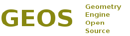

class: center, middle # Introduction to geospatial data analysis with GeoPandas and the PyData stack Joris Van den Bossche, GeoPython conference, May 7, 2018 https://github.com/jorisvandenbossche/geopandas-tutorial --- # About me Joris Van den Bossche - Background: PhD bio-science engineer, air quality research - Open source enthusiast: pandas core dev, geopandas maintainer, scikit-learn contributor - Currently working at the Université Paris-Saclay Center for Data Science (Inria) https://github.com/jorisvandenbossche Twitter: [@jorisvdbossche](https://twitter.com/jorisvdbossche) <div style="margin-bottom:-20px"></div> .affiliations[   ] --- # Raster vs vector data   -- count: false .right[ ### -> in this tutorial: focus on vector data ] -- count: false .right[ ### -> simple features (points, linestrings, polygons) with attributes ] ??? Two major families of geospatial data raster: grid based (topology lacking, difficult to link to tabular data) vector: coordinate based objects, topological here: vector vector -> common abstraction model in many software Open Geospatial consortium standard Attributes : each vector feature can have a record in attribute table and that is where geopandas comes into play but before talking about geopandas, first a bit more general about open source geospatial software # geospatial software This presentation: in python but everything I will present -> builds upon widely used open source libraries --- class: middle, center # Open source geospatial software .center[  ] ??? Open Source Geospatial Foundation OSGeo was created to support the collaborative development of open source geospatial software, and promote its widespread use. --- # GDAL / OGR ### Geospatial Data Abstraction Library. <img style="position: absolute; top: 12px; right: 20px; height:35%" src="img/GDALLogoColor.svg"> * The swiss army knife for geospatial. * Read and write Raster (GDAL) and Vector (OGR) datasets * More than 200 (mainly) geospatial formats and protocols. .center[  ] .credits[ Slide from "GDAL 2.2 What's new?" by Even Rouault (CC BY-SA) ] ??? GDAL is a translator library for raster and vector geospatial data formats. As a library, it presents a single raster abstract data model and single vector abstract data model to the calling application for all supported formats. It also comes with a variety of useful command line utilities for data translation and processing. <!-- # GDAL / OGR ### Widely used (FOSS & proprietary) .center[  ] .credits[ Slide from "GDAL 2.2 What's new?" by Even Rouault (CC BY-SA) ] --> --- # GEOS  ## Geometry Engine Open Source * C/C++ port of a subset of Java Topology Suite (JTS) * Most widely used geospatial C++ geometry library * Implements geometry objects (simple features), spatial predicate functions and spatial operations Used under the hood by many applications (QGIS, PostGIS, MapServer, GRASS, GeoDjango, ...) [geos.osgeo.org](http://geos.osgeo.org) <!-- --- # PROJ.4 C library for performing conversions between cartographic projections. [http://proj4.org/](http://proj4.org/) --> --- # Python geospatial packages -- count:false Interfaces to widely used libraries: - Python bindings to GDAL/OGR (`from osgeo import gdal, ogr`) - [`pyproj`](https://jswhit.github.io/pyproj/): python interface to PROJ.4. - Pythonic binding to GDAL/OGR: - [`rasterio`](https://mapbox.github.io/rasterio/) for GDAL - [`fiona`](http://toblerity.org/fiona/README.html) for OGR - [`shapely`](https://shapely.readthedocs.io/en/latest/): python package based on GEOS. --- # Shapely Python package for the manipulation and analysis of geometric objects <div style="margin-bottom:-10px"></div> Pythonic interface to GEOS -- count:false .mmedium[ ```python >>> from shapely.geometry import Point, LineString, Polygon >>> point = Point(1, 1) >>> line = LineString([(0, 0), (1, 2), (2, 2)]) >>> poly = line.buffer(1) ``` ] <svg xmlns="http://www.w3.org/2000/svg" xmlns:xlink="http://www.w3.org/1999/xlink" width="100.0" height="100.0" viewBox="-0.12 -0.12 3.24 2.24" preserveAspectRatio="xMinYMin meet"><g transform="matrix(1,0,0,-1,0,2.0)"><polyline fill="none" stroke="#66cc99" stroke-width="0.06480000000000001" points="0.0,0.0 1.0,2.0 3.0,2.0" opacity="0.8" /></g></svg> <svg xmlns="http://www.w3.org/2000/svg" xmlns:xlink="http://www.w3.org/1999/xlink" width="100.0" height="100.0" viewBox="-1.199614564286579 -1.1996145642865792 5.399599739836063 4.399599739836063" preserveAspectRatio="xMinYMin meet"><g transform="matrix(1,0,0,-1,0,2.0003706112629045)"><path fill-rule="evenodd" fill="#66cc99" stroke="#555555" stroke-width="0.10799199479672125" opacity="0.6" d="M 0.10557280900008414,2.447213595499958 L 0.155035474356646,2.53482235406189 L 0.2130507437626893,2.6170177210644305 L 0.2790313953728045,2.692967727345159 L 0.35230958293898673,2.7619036183450834 L 0.4321435956500752,2.823127635326852 L 0.5177253656172087,2.8760200779839153 L 0.6081886470156581,2.920045576953979 L 0.7026177840949897,2.9547585127472944 L 0.8000569793090774,2.979807526240225 L 0.8995199677553422,2.994939075079531 L 1.0,3.0 L 3.0,3.0 L 3.098017140329562,2.9951847266721967 L 3.1950903220161297,2.9807852804032304 L 3.290284677254464,2.9569403357322086 L 3.382683432365091,2.923879532511286 L 3.471396736825999,2.8819212643483545 L 3.555570233019603,2.831469612302545 L 3.634393284163646,2.7730104533627364 L 3.707106781186548,2.707106781186547 L 3.7730104533627373,2.634393284163645 L 3.831469612302546,2.5555702330196017 L 3.8819212643483554,2.471396736825997 L 3.923879532511287,2.382683432365089 L 3.956940335732209,2.290284677254462 L 3.9807852804032304,2.195090322016128 L 3.995184726672197,2.0980171403295604 L 4.0,2.0 L 3.995184726672197,1.9019828596704396 L 3.9807852804032304,1.804909677983872 L 3.956940335732209,1.709715322745538 L 3.923879532511287,1.6173165676349106 L 3.8819212643483554,1.528603263174003 L 3.8314696123025453,1.4444297669803983 L 3.7730104533627373,1.3656067158363547 L 3.707106781186548,1.2928932188134525 L 3.6343932841636457,1.2269895466372631 L 3.555570233019602,1.1685303876974547 L 3.4713967368259975,1.118078735651645 L 3.3826834323650896,1.076120467488713 L 3.290284677254462,1.043059664267791 L 3.195090322016128,1.0192147195967696 L 3.09801714032956,1.004815273327803 L 3.0,1.0 L 1.6180339887498947,1.0 L 0.8944271909999159,-0.4472135954999579 L 0.8462856818560246,-0.5327293352965308 L 0.7899939789690481,-0.6131146003747189 L 0.7260942022099621,-0.6875952366887649 L 0.6552017413601281,-0.7554539549957071 L 0.5779993295712907,-0.816037238742901 L 0.4952304682721081,-0.8687616377896693 L 0.4076922668429532,-0.9131193873511033 L 0.3162277660168373,-0.948683298050514 L 0.22171781893629816,-0.9751108699866549 L 0.12507260805611378,-0.9921475911950004 L 0.02722287958870663,-0.9996293887370953 L -0.0708890200906795,-0.9974842088126424 L -0.16831821975471215,-0.985732710676989 L -0.26412642295040845,-0.9644880676812035 L -0.3573909443069025,-0.9339548773508389 L -0.4472135954999579,-0.8944271909999159 L -0.5327293352965292,-0.8462856818560256 L -0.6131146003747172,-0.7899939789690493 L -0.6875952366887635,-0.7260942022099635 L -0.755453954995706,-0.6552017413601293 L -0.8160372387428999,-0.5779993295712923 L -0.8687616377896683,-0.49523046827210987 L -0.9131193873511024,-0.40769226684295523 L -0.9486832980505132,-0.31622776601683966 L -0.9751108699866542,-0.22171781893630083 L -0.9921475911950001,-0.1250726080561167 L -0.9996293887370952,-0.0272228795887098 L -0.9974842088126427,0.07088902009067612 L -0.9857327106769895,0.1683182197547086 L -0.9644880676812047,0.2641264229504048 L -0.9339548773508404,0.35739094430689866 L -0.8944271909999179,0.4472135954999539 L 0.10557280900008414,2.447213595499958 z" /></g></svg> <div style="margin-bottom:-45px"></div> .mmedium[ ```python >>> poly.contains(point) True ``` ] -- count: false Nice interface to GEOS, but: single objects, no attributes ??? # Shapely typical predicates and operations (images from shapely docs) ---  One of the packages driving the growing popularity of Python for data science, machine learning and academic research * High-performance, easy-to-use data structures and tools * Suited for tabular data (e.g. columnar data, spread-sheets, database tables) ```python import pandas as pd df = pd.read_csv("myfile.csv") subset = df[df['value'] > 0] subset.groupby('key').mean() ``` --- # GeoPandas Make working with geospatial data in python easier * Started by Kelsey Jordahl in 2013 * Extends the pandas data analysis library to work with geographic objects and spatial operations * Combines the power of whole ecosystem of (geo) tools (pandas, geos, shapely, gdal, fiona, pyproj, rtree, ...) Documentation: http://geopandas.readthedocs.io/ ??? make working with geospatial data like working with any other kind of data in python (data stack, numpy, pandas and other tools around those) analysis for which you otherwise would need desktop GIS applications (QGIS, ArcGIS) or geospatial databases (PostGIS) makes pandas objects geometry aware --- # Summary * Read and write variety of formats (fiona, GDAL/OGR) * Familiar manipulation of the attributes (pandas dataframe) * Element-wise spatial predicates (intersects, within, ...) and operations (intersection, union, difference, ..) (shapely) * Re-project your data (pyproj) * Quickly visualize the geometries (matplotlib, descartes) * More advanced spatial operations: spatial joins and overlays (rtree) -- count:false **-> Interactive exploration and analysis of geospatial data** --- # Ecosystem [geoplot](http://www.residentmar.io/geoplot/index.html) (high-level geospatial visualization), [cartopy](http://scitools.org.uk/cartopy/) (projection aware cartographic library) [folium](https://github.com/python-visualization/folium) (Leaflet.js maps) [OSMnx](http://geoffboeing.com/2016/11/osmnx-python-street-networks/) (python for street networks) [PySAL](http://pysal.readthedocs.io/en/latest/index.html) (Python Spatial Analysis Library) [rasterio](https://mapbox.github.io/rasterio/) (working with geospatial raster data) ... --- class: middle http://geopandas.readthedocs.io # Thanks for listening! ## Thanks to all contributors! ## Those slides: - https://github.com/jorisvandenbossche/talks/ - [jorisvandenbossche.github.io/talks/2018_FOSDEM_geopandas]( http://jorisvandenbossche.github.io/talks/2018_FOSDEM_geopandas) http://geopandas.readthedocs.io